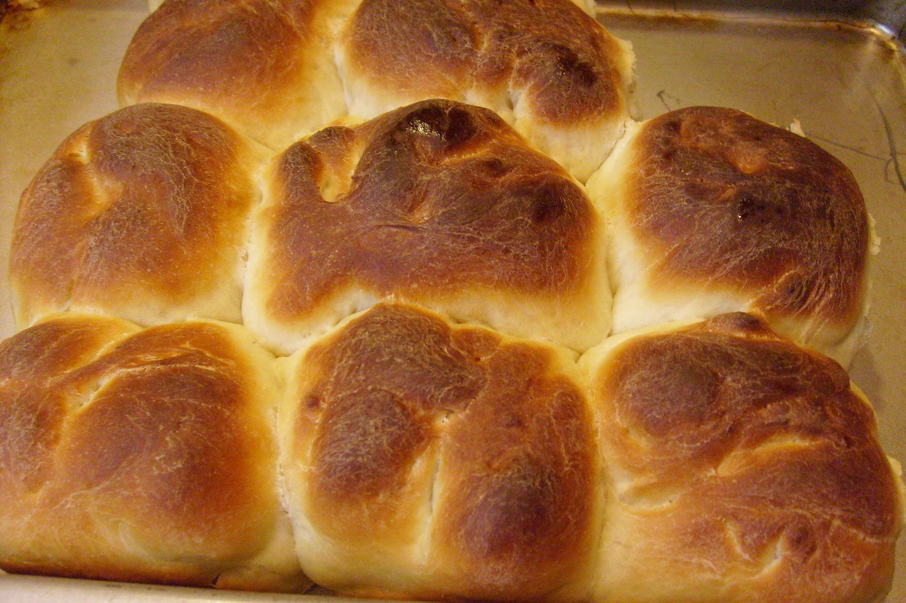

Dinner Rolls
| Prep Time |
Cooking Time |
Total Time |
| 40 mins |
2 hrs |
2 hrs 40 mins |

Ingredients
- 1 cup whole milk(240 mL)
- ½ cup warm water(120 mL)
- ¼ cup unsalted butter(60 mL), melted
- ¼ cup sugar(50 g)
- 2 ¼ teaspoons active dry yeast, 1 packet
- 4 cups all-purpose flour(500 g), plus more for dusting
- 1 ½ teaspoons kosher salt
- 2 large eggs, room temperature
- neutral oil, for greasing
- sea salt, for sprinkling
Instructions
- In a liquid measuring cup or small bowl, combine the warm milk, warm water, melted butter, and sugar.
- Sprinkle the yeast evenly over the wet ingredients, stir to combine, and let stand for 5 minutes, until foamy
- In a large bowl, combine the flour and salt, and stir to combine. Beat 1 egg, then add to the bloomed yeast mixture. Pour the wet ingredients into the flour and use a knife to stir until the mixture just comes together and forms a dough. Turn the dough out onto a lightly floured surface and knead for 5-10 minutes, or until the dough becomes smooth. Add more flour as needed to keep the dough from sticking. To test if it’s done, tear off a small piece of dough and stretch into a thin layer. If the dough doesn’t rip, it’s ready. Or, press a finger into the dough to see if it bounces back.
- Lightly grease a large glass bowl with oil. Add the dough, cover with plastic wrap, and let rest for 1 hour, or until doubled in size.
- Punch down the dough, then turn out onto a floured surface. Knead for a few more minutes, just until the dough is smooth, about 2 minutes.
- Divide the dough into 16 equal balls, roughly the size of tangerines.
- Knead the balls, gathering the edges of the dough toward the center to make a taut, round ball with a smooth top.
- Place the rolls on a parchment paper-lined baking sheet. Cover with plastic wrap and let rise for 30 minutes.
- Preheat the oven to 375˚F (190˚C).
- Beat the remaining egg in a small bowl. Uncover the rolls and brush with the egg wash. Lightly sprinkle the rolls with sea salt.
- Bake for 25-30 minutes, or until the rolls have lightly browned and doubled in size.
Back to top